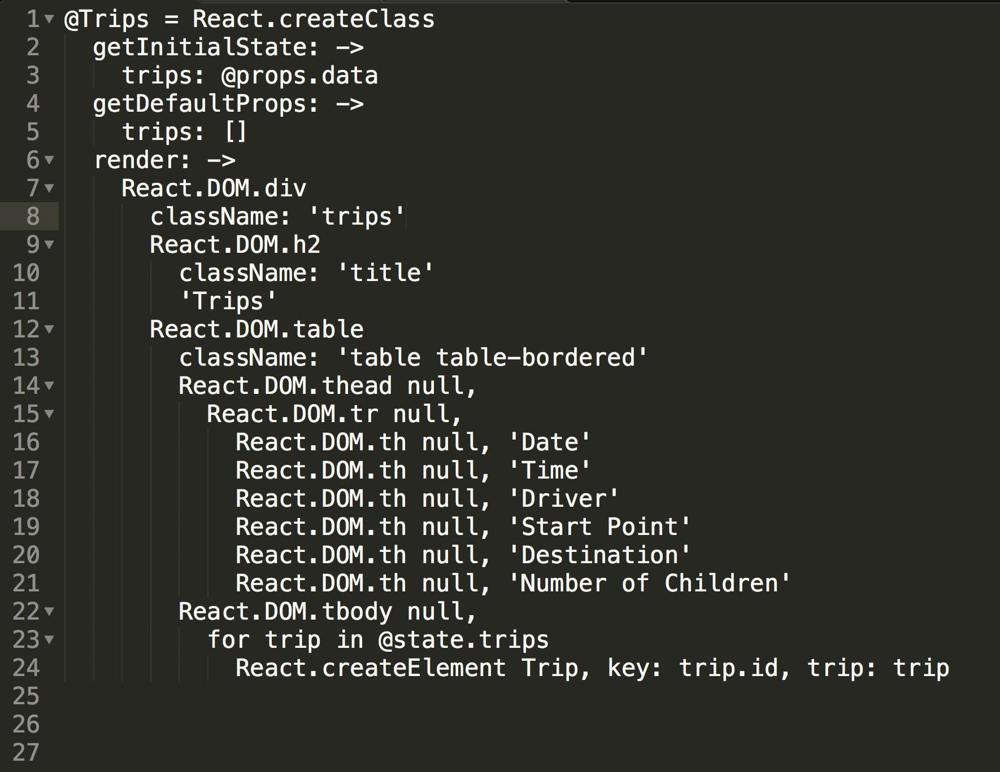

Cora Hays-Magan

I learned vanilla JavaScript awhile ago and had yet to get into any of the frameworks, Backbone, Anjular, React, Done or any others. During Dev Bootcamp, I learned about prototyping and reasoning for object literals and constructor methods. Mindblowing! Who knew JavaScript could be so versatile?
Below is a clipping of some React. During coffee with a DBC alumni, I noticed his eyes light up when I mentioned React in conversation. Taking note, I looked into it further and thought it might be fun to try it.

So what's happening here?
React is building the start of a table.
Line 1-3 are inializing the class. Think a process similar to the Ruby initialize method. The initialized object has a state, the data from the row in the table of the database. The 'getDefaultProp' puts the data into the clearly marked array. The first few lines of code takes the data and builds objects with them and organized them into an array for easy access (meaning iterating through them).
Lines 6 -24 build the DOM elements, meaning the HTML and the styling. This is what is shown on the page. This code snippet only show the start of the table, the data for the table comes later but the last few lines(23-24) display the characteristic for loop of JavaScript.
It's neat to be building the page using only JavaScript and React.